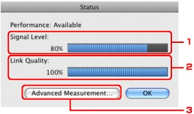

Note
Note-
When using the machine over the Wired LAN, you cannot monitor network status.
-
Start up IJ Network Tool.
-
Select the printer in Printers.
-
Select Status from the View menu.
-
Signal Level
Indicates the strength of the signal received by the printer, ranging from 0% to 100%.
-
Link Quality
Indicates the signal quality excluding the noise while communicating, ranging from 0% to 100%.
 Important
Important-
If the indicated value is low, move your printer closer to the wireless network device.
-
-
Advanced Measurement
Click to examine the connection performance between the printer and the access point. Follow the instructions on the screen to start measuring and display the status. Measurement takes a few minutes.
When is displayed in Connection performance between the printer and the access point, the printer can communicate with the access point. Otherwise, refer to displayed comments and Help for improving the status of communication link.
Note-
If any messages appear on Overall Network Performance, move the machine and access point as instructed to improve the performance.
-
-